27
27.1
Described in Undo and Redo↑.
27.2
Copies the contents of the current image selection to the internal clipboard and fills it with the current background color.
,
27.3
Copies the contents of the current image selection to the internal clipboard. If there is no selection, copies the entire active image. The amount of image data copied is shown in the status bar.
,
27.4
Copies the contents of the current image selection to the system clipboard.
, ,
27.5
Inserts the contents of the internal clipboard (or from the system clipboard if the internal clipboard is empty) into the active image. The pasted image is automatically selected, allowing it to be dragged with the mouse. Click outside the selection to terminate the paste. Select to abort the paste operation.
27.6
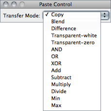
After pasting, use the Paste Control pop-up menu to control how the image currently being pasted is transferred to the destination image.
Except for Blend and Transparent, the Paste Control transfer modes are the same as those listed in the description of The Blend mode is the same as the Image Calculator Average mode. In Transparent mode, white/black pixels are transparent and all other pixels are copied unchanged.
27.7
Erases the contents of the selection to the current background color. Backspace and Del keys are shortcuts to this command. With stacks, a dialog is displayed offering the option to clear the selection in all stack images. Clear by pressing Backspace to avoid this dialog.
, ,
27.8
Erases the area outside the current image selection to the background color.
, ,
27.9
Fills the current selection with the current foreground color. With stacks, a dialog is displayed offering the option to fill the selection in all stack images. Fill the selection by pressing F to avoid this dialog.
, ,
27.10
Outlines the current selection using the current foreground color and line width. The foreground and background colors can also be set using the command. Use the command, or double click on the line tool, to change the line width.
With stacks, a dialog is displayed offering the option to draw the selection in all stack images. Draw the selection by pressing D to avoid this dialog.
12 Drawing Lines Wider Than One--Pixel
If the line width is an even number, the selection boundary is at the center of the line. If the line width is odd (1, 3, …), the center of the line drawn is displaced from the selection edge by 1⁄2 pixel to the bottom right. Thus the line center (the line in case of line width = 1) is inside the selection at the top and left borders, but outside at the bottom and right borders. Rectangular selections (but not polygonal selections or traced selections that happen to be rectangular) are an exception to this rule: For rectangular selections, one--pixel wide outlines are always drawn inside the rectangle. Thicker lines are drawn as for the other selection types.
27.11
Creates a reversed image, similar to a photographic negative, of the entire image or selection. For 8-bit and RGB images (see Image Types and Formats↑), always uses min = 0 and max = 255, regardless of the data values. For 16-bit and 32-bit images, the actual minimum and maximum are used (rather than the full range of the pixel type).
27.12
|
Original
|
Figure 18 ROI manipulations using commands. General handling of ROIs and Overlays↑ is described in Selections↑.
27.12.1
Creates a rectangular selection that is the same size as the image.
27.12.2
Deactivates the selection in the active image.
27.12.3
Restores the previous selection to its original position. A selection is saved when you:
- Delete the selection by clicking outside of it
- Draw a new selection
- De-activate the image containing the selection
- Close the image containing the selection
- Use a command that deletes or modifies the selection
13 Transferring Selections Between Images
You can transfer a selection from one image to another by activating the image with the selection, activating the destination image, then pressing Shift E (the keyboard shortcut for ). This shortcut can also be used to restore accidentally deleted ROIs. Alternative ways to transfer ROIs across images involve the ROI Manager↓ and the cursor synchronization features provided by .
27.12.4
Fits a cubic spline curve to a polygon or polyline selection (see ROI manipulations↑).
,
27.12.5
Fits a circle to a multipoint (with at leas 3 points) or area selection [14] (see ROI manipulations↑). Composite selections are not supported. With open shapes (lines and points), the fitting algorithm (Newton-based Pratt fit) described in Pratt V, “Direct least-squares fitting of algebraic surfaces”, Computer Graphics, Vol.21, pp 145--152 (1987) is used. With closed shapes, the command creates a circle with the same area and centroid of the selection.
27.12.6
Replaces an area selection with the best fit ellipse (see ROI manipulations↑). The ellipse will have the same area, orientation and centroid as the original selection. The same fitting algorithm is used to measure the major and minor axis lengths and angle when FitEllipse is selected in
DrawEllipse macro
27.12.7

Converts the active selection into a sub-pixel resolution ROI of floating-point coordinates spaced interval pixels apart. If Smooth is checked, traced and freehand selections (see Area Selection Tools↑) are first smoothed using a 3--point running average. Refer to Selections With Sub-pixel Coordinates↑ for more details.
27.12.8
Replaces a polygon of freehand selection with its convex hull (see ROI manipulations↑), determined by the gift wrap algorithm. The convex hull can be thought of as a rubber band wrapped tightly around the points that define the selection.
27.12.9
Creates an inverse selection (see ROI manipulations↑). What is ‘inside’ the selection will be ‘outside’, and vice versa.
27.12.10
Creates a new 8-bit image called ‘Mask’ whose pixels have a value of 255 inside the selection and 0 outside (see ROI manipulations↑). By default, this image has an inverting LUT, so black is 255 and white is 0 unless Black Background in is checked.
27.12.11
Creates a selection from a thresholded image or a binary mask [15].
27.12.12
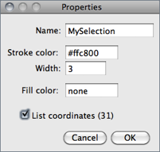
Opens a dialog box that allows the user to assign a contour color (Stroke color) and a contour width (Width) to the active selection or a filling color. Note that selections can be either filled or contoured, but not both. The default selection colors (black, blue, cyan, green, magenta, orange, red, white, yellow) can be typed textually. Any other color must be typed using hex notation (see 20: Hexadecimal Color Values↓).
Set Stroke width to 0 to have selections drawn using a width of one pixel regardless of the image magnification (see 19: Working with Zoomed Canvases↓).
With Text Tool↑ selections, it is also possible to specify the font size and text alignment. Choose List coordinates to retrieve on a dedicated table the XY coordinates of active selection at evenly spaced one pixel intervals.
Note that while this command can only be applied to the active selection, the ROI Manager’s Properties…command () can be applied to multiple ROIs.
Selections↑, , ,
27.12.13
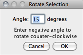
Rotates the selection (using floating-point coordinates) by the specified number of degrees. A negative number indicates counter-clockwise rotation. This command runs the RotateSelection macro in ij.jar.
FlipSelection macro
27.12.14
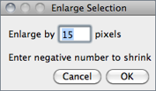
Grows an area selection by a specified number of pixels. Enter a negative value to shrink the selection. This command runs the EnlargeSelection macro in ij.jar. ShrinkSelection is a variation of this macro that does not shrink polygonal selections from the edges of the image.
14 Converting Composite Selections
Enter zero in the dialog box to convert Composite Selections↑ into polygon selections. Note, however, that the conversion may fail if the composite ROI is composed of more than one piece and/or contains internal holes.
27.12.15
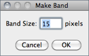
Takes an area selection and creates a band with a thickness of the specified number of pixels (see ROI manipulations↑). If you imagine the band as a doughnut shape, then the original selection corresponds to the hole (i.e.the band is made by growing out the original selection).
MakeSelectionBand, the macro that implemented this command in previous IJ versions.
27.12.16
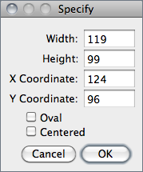
Opens a dialog that allows the user to define a rectangular or elliptical selection. Width and Height are the dimensions of the selection. X Coordinate and Y Coordinate define the position of the selection. Check Oval to create an elliptical selection. If Centered is checked, the selection is positioned so X Coordinate and Y Coordinate define the center of the selection, otherwise they define the upper left corner.
This command is also available through the ROI Manager More≫ drop-down menu (see ).
27.12.17
This command straightens a curved object in an image (see Straightening filamentous objects↓). The curved object must first be outlined using the Segmented Line Selection Tool↑. Double click on the line tool icon to open the widget, in order to adjust the width of the line selection. By default, the command fits a cubic spline curve to the points that define the line, so it is not necessary to check the Spline Fit checkbox. Note that also works with straight line selections. In this case, the object defined by the line selection is rotated to be horizontal.
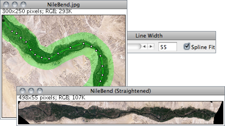
Figure 19 . As described in Segmented Line Selection Tool↑, the nodes of a polyline points can be repositioned (dragged), deleted (using Alt-click) or duplicated (using Shift-click). Press Shift E () to restore accidentally deleted lines.
27.12.18
Converts a non-rectangular selection to the smallest rectangle that completely contains it.
27.12.19
Converts a line selection to an area (traced) ROI.
27.12.20
Converts a non-composite area selection to its enclosing outline (see ROI manipulations↑). The obtained line will have the width specified in the widget. Note that by design does not create closed paths. E.g., the converted outline of a rectangular selection will be composed of only three segments, with the first and fourth corner points of the rectangle being disconnected.
27.12.21
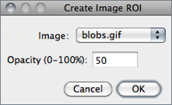
Creates an image selection (ImageROI). Image selections are Overlays↑ that can be moved around the canvas (see ). Once created, opacity of the blended image be re-adjusted at any time using . Use Shift E () to recover the blending image after clicking outside its limits. Use Shift F () to finally embed the imageROI.
Note that image selections behave only partially as regular selections (e.g., can be added to the ROI Manager list, can be moved beyond image boundaries but cannot be resized or rotated). However they are stored in the TIFF header and can be saved and restored when saving images in TIFF format.
(Blend transfer mode), ,
27.12.22
Adds the current selection to the ROI Manager (). If there is no selection the ROI Manager is open.
27.13
Use commands in this submenu to change various ImageJ user preference settings.
27.13.1
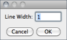
Displays a dialog box that allows to change the line width (in pixels) of line selections (see Line Selection Tools↑) and concomitantly the lines generated by the command. This legacy command has been superseded by the widget, but required since the later is not recordable (see ).
27.13.2
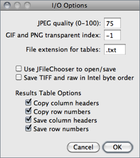
JPEG quality (0-100) Specifies the compression level used by Requesting a higher degree of compression (a lower value) will result in smaller files, but poorer image quality. Note that lossy JPEG compression creates serious artifacts, see 3: Image Types: Lossy Compression and Metadata↑.
GIF and PNG transparent index Specifies the transparent color used for images saved in GIF and PNG formats. Use -1 for “none”. Note that PNG and GIF transparency only works with 8-bit images.
File extension for tables Sets the default extension to be used when saving Results Table↑s. Files with .txt and .xls extensions are saved in tab-delimited format and files with .csv extensions are saved in comma-delimited format.
Use JFileChooser to open/save Enables versions of and that use the Java Swing’s JFileChooser instead of the native OS dialogs. The main advantage of JFileChooser is the ability to open multiple files by Shift-clicking to select multiple contiguous files and control-clicking to select more than one individual file. On the other hand, it is slower, uses more memory, and does not behave like the file open and save dialogs used in other applications. It requires Java 2, which is included with the Linux and Windows distributions of ImageJ and is built into Mac OS X.
Save TIFF and raw in intel byte order Specifies the byte order used when saving 16-bit and 32-bit images using , or when Raw is chosen as the format. Check this option to export images using the order used by Intel × 86 based processors (little-endian). This Wikipedia article has more information.
Results Table Options Specifies if column headers and row numbers should be saved or copied from ImageJ tables such as the Results and Summarize windows (see Results Table↑).
27.13.3
Opens a small widget with three pop-up menus for specifying the typeface, size, style and antialiasing (Smooth checkbox) of the font used by the Text Tool↑ and It is also possible to adjust the horizontal text alignment using the style drop-down menu: Left (the default), Right, or Centered. The widget is more easily opened by double clicking on the Text Tool↑.
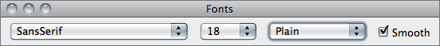
27.13.4
Use this dialog to control how plots generated by ImageJ are displayed (, , , , Multi Plot [], etc.).
Plot Width and Plot Height Specify the length (in pixels) of the X-axis (Plot Width) and Y-axis (Plot Height).
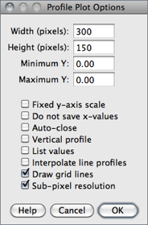
Fixed y-axis Scale If checked, the Y-axis range is fixed and the specified MinimumY and MaximumY values are used, otherwise, plots are scaled based on the minimum and maximum gray values.
Do not Save x-values If checked, ‘List’, ‘Save…’ and ‘Copy…’ buttons will appear in profile plot windows.
Auto-close If checked, profile plot windows will be automatically closed when ‘List’, ‘Save’ and ‘Copy’ are clicked on.
Vertical Profile If checked, row average plots of rectangular areas (or line selections wider than 1 pixel) will be generated instead of the default column average plots. Note that evoking with Alt B will generate vertical profiles.
List values If checked, the list of values will be automatically opened. If Auto--close is also checked, the plot is closed and only the list of values remains open.
Interpolate line profiles If checked, will use bilinear interpolation to retrieve intensity values along non-straight line selections.
Draw grid lines If checked, gray grid lines will be drawn in the plot.
Sub-pixel resolution If checked, line selections created on zoomed images will use floating-point coordinates, resulting in smoother curves (see Selections With Sub-pixel Coordinates↑ and ).
27.13.5
27.13.6
See Arrow Tool↑.
27.13.7
See Point Tool↑.
27.13.8
See Wand Tool↑.
27.13.9
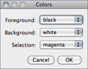
Displays a dialog box that allows you to set Foreground, Background and Selection color. As mentioned earlier, the selection color is highlighted in the Point Tool↑ and Wand Tool↑ icons. Drawing colors are displayed in the Color Picker Tool↑ (foreground and background colors) and drawing tools such as the Arrow↑, Brush↑, Flood Filler↑ and Pencil↑ (foreground color only).
, Colors…↓
/* This macro loops through the all the possible Selection colors using "q" as a keyboard shortcut */
var cIdx;
macro "Change Selection Color [q]" {
color= newArray("red", "green", "blue","magenta", "cyan", "yellow", "orange", "black", "white");
run("Colors...", "selection="+ color[cIdx++]);
if (cIdx==color.length) cIdx= 0;
}
27.13.10
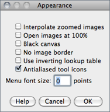
This dialog contains options that control how images are displayed, an option to display better looking toolbar icons, and an option to set the menu font size.
Interpolate zoomed images Uses interpolation instead of pixel replication when displaying zoomed images.
Open Images at 100% Newly open images are displayed using 100% magnification (1 image pixel = 1 screen pixel).
Black Canvas Causes the image canvas (white by default) to be rendered in black. This is useful when looking at X-ray images in order to avoid high contrasting intensities at the image edges.
No image border Displays images without the default one pixel wide black border.
Use inverting lookup table Causes newly opened 8-bit images to have inverted pixel values, where white = 0 and black = 255. This is done by both inverting the pixel values and inverting the LUT. Use the command to invert an image without changing the pixel values.
Double Buffer Selections Reduces flicker when working with complex selections but it also increases memory usage and slows screen updates. It is not needed on Mac OS X, which has built in double buffering.
Antialiased tool icons Smooths and darken the tool icons in the Main ImageJ window↑. This option is enabled by default on all operating systems. On Windows XP, enable Clear Type sub-pixel anti-aliasing to improve the quality of text in menus.
Menu font size Specifies the size of the ImageJ window menu font. Use a size of 0 (zero) to use Java’s default menu font size. Changing the font size requires the restarting of ImageJ. This option is ignored on Mac OS X.
27.13.11
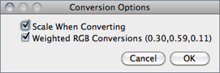
Use this dialog to set options that control how images are converted from one type to another.
Scale When Converting ImageJ will scale from min--max to 0--255 when converting from 16-bit or 32-bit to 8-bit or to scale from min--max to 0--65535 when converting from 32-bit to 16-bit. Note that Scale When Converting is always checked after ImageJ is restarted.
Weighted RGB Conversions (0.30, 0.59, 0.11) When checked, the formula gray = 0.299 × red + 0.587 × green + 0.114 × blue is used to convert RGB images to grayscale. If it is not checked, the formula gray = (red + green + blue) ⁄ 3 is used. The default weighting factors (0.299, 0.587, 0.114), which are based on human perception, are the ones used to convert from RGB to YUV, the color encoding system used for analog television. The weighting factors can be modified using the setRGBWeights() macro function.
27.13.12
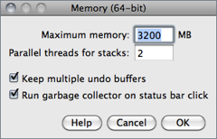
Use this dialog to specify the maximum amount of memory available to ImageJ and the number of threads used by filters when processing stacks. Java applications such as ImageJ will only use the memory allocated to them (typically 640 MB) but this dialog allows the user to allocate more than the default.
Note that specifying more than 75% of real RAM could result in virtual RAM being used, which may cause ImageJ to become slow and unstable. Also note that this dialog cannot be used to set the memory allocation if ImageJ is run from the command line or by double clicking on ij.jar.
Maximum memory 64-bit OS and a 64-bit version of Java are required to use more than ≈1700 MB of memory. Windows users must be running a 64-bit version of Windows and must install a 64-bit version of Java. Mac users must be running OS X 10.5 or later and may need to use the Java Preferences utility (in /Applications/Utilities/Java) to select a 64-bit version of Java. They may also need to switch to the ImageJ64 application. Linux users need to be running 64-bit versions of Linux and Java. The title of the Memory & Threads dialog box changes to Memory (64-bit) when ImageJ is running on a properly configured 64-bit system.
Parallel threads for stacks Defaults to the number of available processors determines the number of parallel threads used by commands in the and the submenus when processing stacks.
Keep multiple undo buffers If checked, the undo buffer will be preserved when switching images. remains restricted to the most recent operation, but is available for each opened image, as long as the buffer allows it. If Keepmultipleundobuffers is unchecked, the undo buffer is reset every time the active (frontmost) image changes.
Run garbage collector on status bar click If checked, forces the Java garbage collector to run every time the user clicks on the Status bar↑, which may help to reclaim unused memory (see also ).
27.13.13
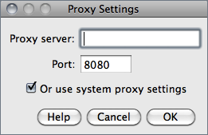
Use this dialog to modify the proxy settings of the Java Virtual Machine. This may be required for ImageJ to connect to the internet in certain machines running behind HTTP proxies. For example, proxy settings may be required to update ImageJ using the command or to open the images in the submenu.
To use the system proxy settings enable the Or use system proxy settings option (this will set the java.net.useSystemProxies property to true). To configure your proxy settings manually specify the address of the HTTP proxy in Proxy server and the port the proxy listens on (normally 8080) in Port. Settings will be saved in the ImageJ preferences file (IJ_Prefs.txt).
27.13.14
Displays a dialog box with options for the command.
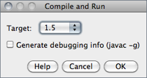
Target Specifies the Java version of the class files created by Plugins compiled with a Target of 1.6 will not run on earlier version Java. A Target of 1.4 should be used to create plugins capable of running on all versions ImageJ. Target cannot be set higher than the version of Java ImageJ is currently running on.
Generate Debugging Info (javac -g) If checked, information needed by Java debuggers will be included in the class files.
27.13.15
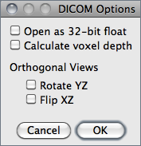
This dialog sets options related to the handling of DICOM images. Namely, if ImageJ should open DICOM images as 32-bit float, if voxel depth should be calculated (based on the distance between the first and last slice) and if coronal/transverse sections should be mirrored when using the command. With IJ 1.45, the DICOM reader applies the Rescale Slope value when Open as 32-bit float is enabled and tag 0028,1053 is not 1.0.
27.13.16
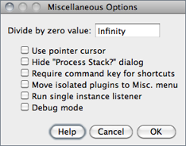
Displays a dialog box for configuring several (advanced) settings that do not fit elsewhere in the ImageJ interface.
Divide by zero value Specifies the value used when detects a divide by zero while dividing one 32-bit real image by another. The default is infinity. In addition to numeric values, ‘infinity’ (positive or negative infinity), ‘max’ (largest positive value) and ‘NaN’ (Not-a-Number) can be entered as the Divide by zero value.
Use pointer cursor If checked, ImageJ will use an arrow cursor instead of the default crosshair that is sometimes difficult to see on grayscale images in areas of medium brightness. This option can also be used to work around a bug on Windows where the text cursor is sometimes used in place of the crosshair. Note that the default crosshair can be customized as explained in Customizing the ImageJ Interface↑.
Hide "Process Stack?" dialog If checked, ImageJ will suppress the dialog that asks ‘Process all xx slices?’ (only the current slice will be processed).
Require control/command key for shortcuts If checked, requires the Control key (Command key on Macs) to be pressed when using keyboard shortcuts for menu commands.
Move isolated plugins to Misc. menu This option can reduce the size of the Plugins menu, preventing it from running off the bottom of the screen. When this option is enabled, plugins that attempt install themselves in a submenu with only one command are instead installed in the submenu. An example of such a plugin is TurboReg, which normally creates a submenu that contains only one command.
Run single instance listener If checked, ImageJ will use sockets to prevent multiple instances from being launched [16]. On Windows, this avoids the problem where another copy of ImageJ starts each time an image is dragged and dropped on the ImageJ icon. It also prevents multiple instances when running ImageJ from the command line. Note that you may get a security alert the first time ImageJ starts with this option enabled. ImageJ does not require external socket access so it is okay to deny it access in the security alert. This option is set by default with new Windows installations.
Debug mode If checked, causes ImageJ to display debugging messages in the Log Window↑. In addition, some commands (e.g., and ) produce detailed outputs when Debug mode is active. Close the Log window to disable display of debugging messages.
27.13.17
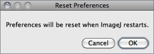
Causes the IJ preferences file (IJ_prefs.txt) to be deleted when ImageJ quits, resetting all parameters to their default values when ImageJ is restarted.
As mentioned in Settings and Preferences↑, IJ_prefs.txt holds all the settings and preferences of ImageJ and is stored in ~ /Library/Preferences/ on Mac OS X, in ~ /.imagej/ on Linux and in the ImageJ folder on Windows. Several macros and plugins also write parameters to this file.